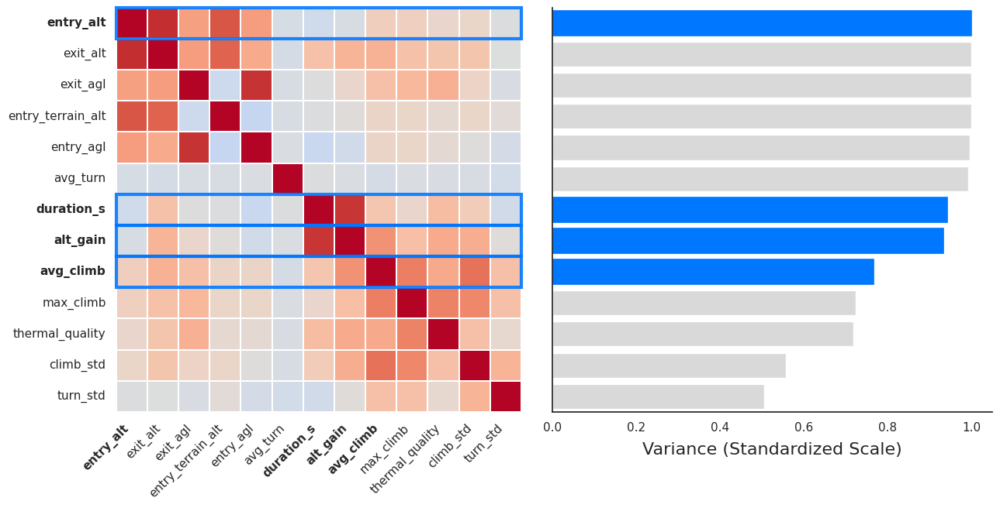
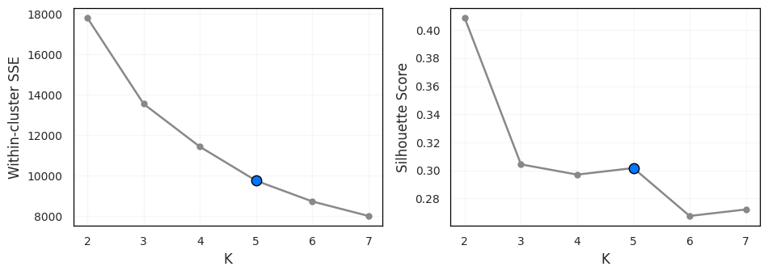
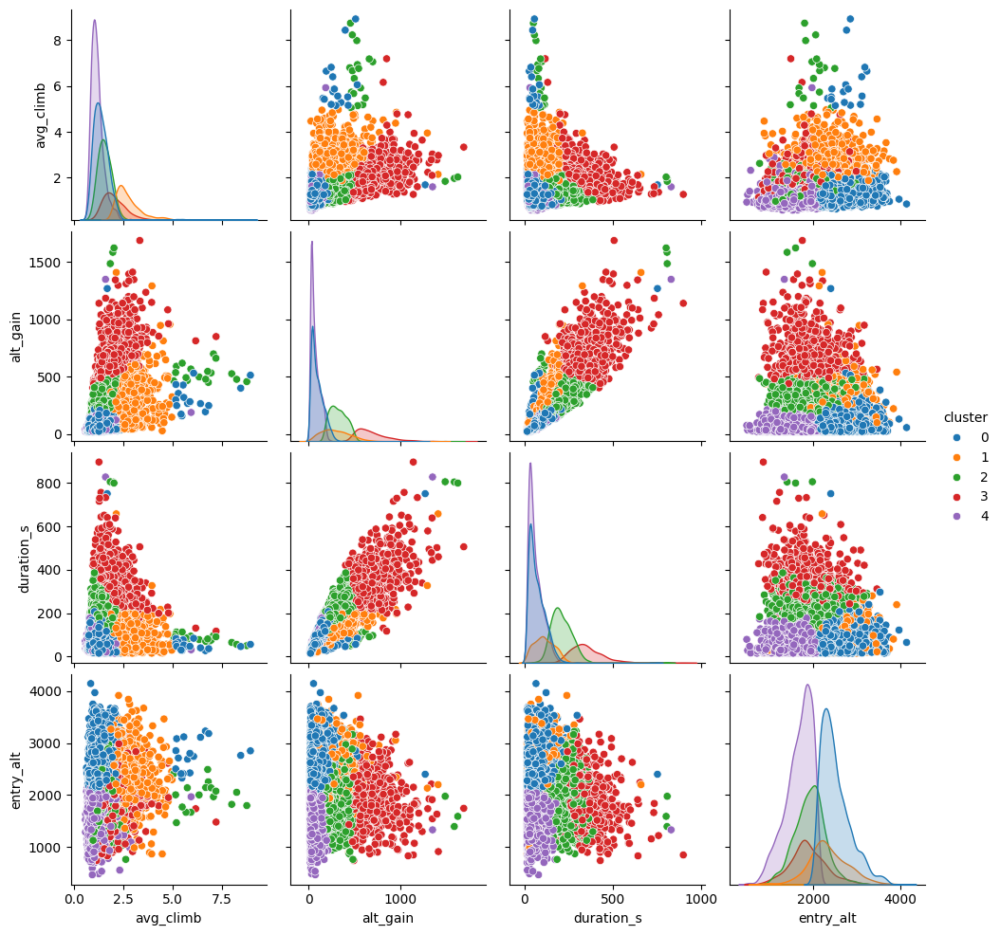

Clustering was applied to identify natural groups of thermals based on flight and environmental parameters.
By analyzing relationships among features such as average climb rate, altitude gain,
thermal duration, climb variability, and entry altitude,
the model uncovered distinct thermal types that correspond to physical phases of a thermal's lifecycle.
Data
After cleaning and scaling the flight dataset, K-Means clustering was used to group thermals
into five distinct clusters. The optimal number of clusters was determined through a combination of the
Elbow Method and Silhouette Analysis. The model was applied to standardized features,
optionally reduced via PCA for visualization.

Correlation and variance overview of standardized thermal features.
Left: the heatmap shows pairwise correlations between all thermal variables,
where red indicates strong positive correlation.
Selected key features (avg_climb, alt_gain, duration_s, entry_alt)
are highlighted in blue. Right: relative feature variance, emphasizing variables that exhibit the widest distribution and thus contribute most to clustering within the thermal dataset.
Placeholder — finalized dataset snapshot.
Example rows from the cleaned and standardized thermal dataset after all preprocessing steps
(missing value treatment, outlier removal using |z| > 5,
and feature scaling).
This finalized table served as the input for the subsequent PCA and K-Means clustering analyses,
containing only physically meaningful and well-behaved variables such as
avg_climb, alt_gain, duration_s, entry_alt, and climb_std.
Boxplots of the main thermal features after standardization into Z-score space.
Values beyond |z| > 5 were identified as statistical outliers and removed to
ensure robust clustering performance.
The standardized scale highlights that all four features (avg_climb, alt_gain,
duration_s, and entry_alt) vary within comparable numeric ranges, preventing
dominance of any single variable during distance-based clustering.
Code
Link to GitHub repository and code examples.
Results
Hierarchical clustering dendrogram using the Ward linkage method, applied before the K-Means analysis
to estimate the natural number of thermal groups. Each branch represents the merging distance between thermals
based on feature similarity. The clear vertical jumps in linkage distance around four to five clusters
supported the choice of K = 5 for subsequent K-Means clustering.

Elbow (left) and Silhouette analysis (right) for K-Means cluster selection.
Inertia decreases gradually without a clear elbow, the Silhouette curve peaks near K = 5, indicating the best trade-off between cohesion and separation.
This finding is consistent with the hierarchical clustering results.

Pairplot visualization of the five key thermal features used in K-Means clustering
(avg_climb, alt_gain, duration_s, entry_alt, and climb_std).
Each color represents a distinct thermal cluster. The separation reveals a clear hierarchy:
weaker short-lived thermals (purple, cluster 4) form near lower altitudes, while
stronger, sustained thermals (red, cluster 3) achieve greater altitude gain and duration.
These data-driven clusters correspond closely to physical phases of thermal evolution.
Conclusions
The clustering revealed a clear thermal hierarchy: weak short-lived thermals near the surface evolve into
strong, long-lived thermals that sustain significant altitude gain.
Below is a summary of the median feature values per cluster.
Median characteristics of each thermal cluster.
Clusters 3 and 2 represent sustained, efficient thermals with high climb rates and long durations,
while Clusters 4 and 0 capture the formation and decay phases.
Cluster 1 identifies short, energetic bursts of strong lift.
These distinctions align with real-world paragliding experience: thermals form low, strengthen mid-flight,
and weaken at altitude.
Feature relationships colored by cluster assignment.
Future models will integrate weather reanalysis data (e.g., temperature gradients, CAPE, wind shear)
to predict the likelihood of forming strong thermals (Clusters 2–3).
Techniques such as Random Forests or XGBoost can then highlight which meteorological variables
most influence the development of optimal lift conditions.